地政学
バンクーバーは太平洋貿易の玄関で、港湾、鉄道、空港、米国国境、アジア移民の回路が重なります。先住民の未割譲地に立つ都市でもあり、土地、主権、和解の問題が都市計画の基礎にあります。港の政治も重い課題です。
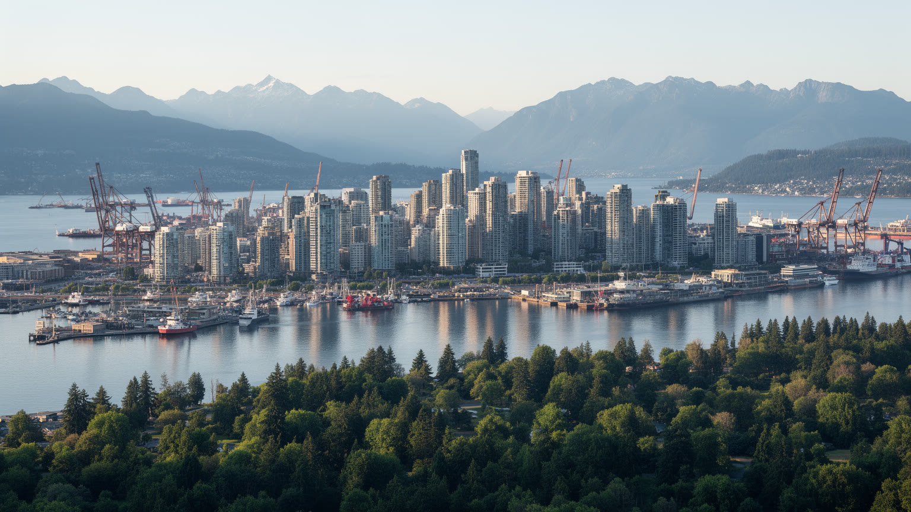
🇨🇦 カナダ / ブリティッシュコロンビア州 / World City Atlas
太平洋に開くカナダ西岸の港湾都市です。山と海、先住民の土地、アジア太平洋貿易、移民社会、住宅危機、映画と技術、自然観光、気候リスクが近い距離で重なります。
都市の骨格
バンクーバーは、バラード入江とフレーザー川、ノースショアの山並み、ダウンタウンの高層住宅、港湾と郊外の物流を一つの都市圏で結びます。自然の美しさは、土地不足と住宅費の高さを同時に際立たせます。
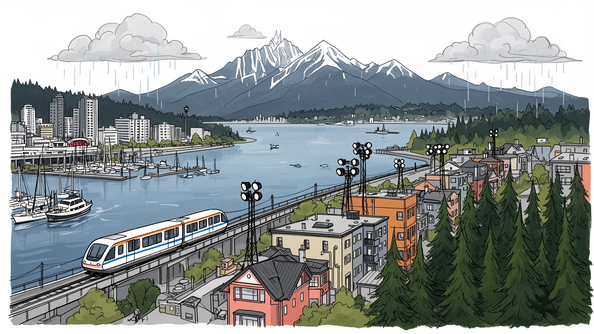
バンクーバーは太平洋貿易の玄関で、港湾、鉄道、空港、米国国境、アジア移民の回路が重なります。先住民の未割譲地に立つ都市でもあり、土地、主権、和解の問題が都市計画の基礎にあります。港の政治も重い課題です。
港湾物流、映画制作、ゲーム、技術、観光、大学、不動産、建設が経済を作ります。清掃、介護、飲食、倉庫、配送、ホテル、港湾の現場労働も、海と山の都市の便利な日常を下支えします。賃金と家賃の差も大きな課題です。
中国系、南アジア系、フィリピン系、イラン系、先住民、欧州系などの生活が重なり、寺院、教会、モスク、グルドワラ、食卓、祭りが都市の暦を作ります。多文化性は観光の飾りではなく、学校と職場の日常です。今も続きます。
旅行者は海辺公園、市場、山、港、歴史地区を巡るが、住民には家賃、通勤、薬物危機、ホームレス、山火事煙、洪水、先住民との和解が迫ります。美しい都市ほど、生活の負担も見えやすい場所です。日常も問われます。
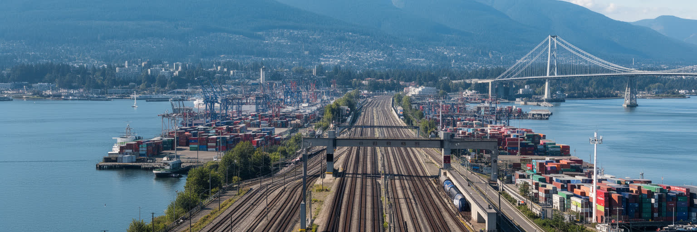
バンクーバーの都市形態は、バラード入江、イングリッシュ湾、フレーザー川、ノースショア山地に囲まれた狭い平地から生まれます。港は外洋へ開き、鉄道は内陸の資源と農産物を太平洋へ運び、橋とトンネルは限られた土地を結びます。ダウンタウン半島は高層住宅、オフィス、観光、港湾が近く、スタンレーパークや海沿いの歩道が都市の印象を柔らかくするが、土地の制約は住宅価格と再開発圧力を強めます。山と海の美しさは、都市の余白ではなく、成長の限界を決める条件です。港湾、鉄道、住宅、公園、先住民の土地、埋立地、洪水リスクは同じ地図に重なります。バンクーバーを読むには、絵葉書の海辺だけでなく、コンテナヤード、貨物線、橋の渋滞、郊外の倉庫、斜面住宅まで見る必要があります。自然が近い都市ほど、土地利用の一つ一つが政治になります。海辺の眺望を誰が持ち、港の騒音を誰が引き受け、洪水の備えを誰が払うかが、都市の公平性を左右します。美しい地形は、暮らしやすさの約束ではなく、計画の難しさを日々突きつけます。さらに、港湾用地と住宅用地はどちらも簡単に移せないため、都市の合意形成は遅くなります。公園の保存、貨物の効率、低所得者の住まい、先住民政府との協議を同じ場で扱う力が求められます。短い海岸線に多くの機能が押し込まれるため、小さな土地の判断が広い生活条件を変えます。
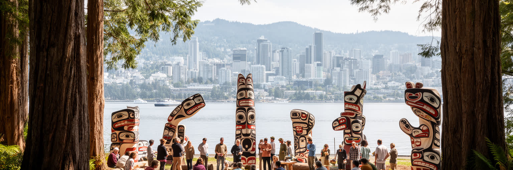
バンクーバーを理解する入口は、この都市がマスキーム、スコーミッシュ、ツレイル・ワウトゥスの人々の未割譲の伝統的領域に立つという事実です。港、大学、公園、住宅地、道路、観光施設は、空白の土地に後から置かれたのではありません。サケ漁、入り江、森、季節移動、言語、儀礼、親族関係の上に植民地都市が重なりました。近年は土地承認の言葉が公共施設や行事で使われるが、言葉だけでは住宅、教育、医療、文化財返還、開発利益、環境保護の不均衡は解けありません。先住民政府は都市開発、賃貸住宅、文化施設、環境管理に関わり、和解は理念ではなく土地利用と収入配分の問題になっています。スタンレーパークや海岸の美しさも、植民地化で失われた集落や漁場の記憶を含みます。バンクーバーの多文化性を語るなら、移民都市である前に、先住民の主権と都市成長が衝突し続けてきた場所として読む必要があります。和解は過去への謝罪だけでなく、現在の都市計画を誰と決めるかという実務です。土地の名前、開発の利益、海の管理、学校で教える歴史を変えることが、都市の未来を変えます。都市の成長が大きな利益を生むほど、その利益が誰へ戻るかは重要になります。文化の表示だけでなく、住宅、雇用、言語、土地管理の権限を伴う関係が求められます。公共空間に残る名称や像も、誰の記憶を中心に置くかを示します。街を歩くことは、土地の歴史を読み直すことでもあります。
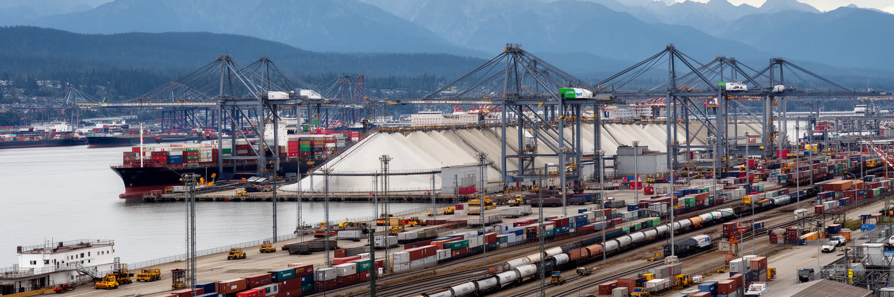
バンクーバー港は、カナダの内陸資源とアジア太平洋市場を結ぶ重要な結節点です。穀物、石炭、木材、鉱産物、肥料、コンテナ、消費財、自動車が港を通り、鉄道と高速道路を介してプレーリー、ロッキー山脈、米国国境、空港へつながります。港湾は華やかな観光景観の背後で、クレーン、倉庫、荷役、税関、海運、保険、通関、鉄道運行、労働争議の現場を持ちます。アジアとの貿易が増えるほど、為替、関税、地政学、港湾混雑、労働条件は住民の物価と雇用へ波及します。港は都市の富を生むが、騒音、大気汚染、交通、土地利用の競合も生みます。水辺を住宅と公園へ変えたい力と、港を国の物流基盤として守る力は常にせめぎ合います。バンクーバーの国際性は、空港の到着ロビーや移民街だけでなく、船積みされた小麦やコンテナの行方にも表れます。港湾を読むことは、カナダ西部の農業、鉱業、林業、アジア市場、都市の住宅価格までを一本の物流線として見ることです。海に開く都市は、世界経済の波を岸壁で受け止めます。港の安定は、国の輸出信用と都市の雇用を同時に支えています。港が止まれば、農家、鉱山、倉庫、店、家庭の物価に影響が及びます。だから港湾政策は、地元の土地利用であると同時に国家の経済安全保障でもあります。岸壁の効率と労働者の安全、周辺住民の空気を同じ表で評価する視点が欠かせません。
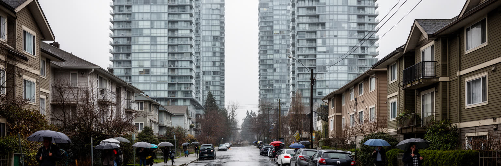
バンクーバーの最大の社会課題は、住宅の高騰と生活費の重さです。海と山に囲まれた土地の制約、投資資金、移民需要、低層住宅地の規制、観光と短期滞在、再開発、所得格差が重なり、働く人が職場近くに住みにくくなりました。高層コンドミニアムは都市の象徴ですが、家賃を払う学生、介護職、飲食店員、芸術家、単身者、家族には厳しい選択を迫ります。住める場所が遠くなれば通勤時間が伸び、公共交通と保育、医療、学校の負担も増えます。ダウンタウン・イーストサイドでは、貧困、薬物危機、精神医療、ホームレス、先住民の不均衡が集中し、都市の豊かさとの落差が露出します。住宅政策は建物の数だけでなく、非営利住宅、家賃規制、支援付き住宅、土地信託、先住民住宅、移民の入居差別対策まで含む必要があります。バンクーバーの魅力は住みたい人を増やすが、その魅力が住民を追い出すなら都市の成功は空洞化します。海辺の眺望と路上のテントは別々の現象ではありません。土地を資産として扱う力と、住まいを権利として守る力の衝突が、街路に現れています。住宅を解くことなしに、都市の包摂は語れません。さらに、住宅費は文化、福祉、産業の持続力にも響きます。若い作り手、保育士、看護師、港湾労働者が暮らせない都市では、豊かな日常を支える人材が離れていきます。住宅は景観ではなく、都市の基礎体力です。
バンクーバーは港湾都市であると同時に、映画、テレビ、ゲーム、視覚効果、技術産業の都市でもあります。温和な気候、多様な都市景観、北米の制作ネットワーク、税制支援、英語圏の人材、アジア太平洋との距離感が、撮影とポストプロダクションを集めてきました。ダウンタウンや郊外の通りは別の都市の代役にもなり、倉庫やスタジオ、編集室、ゲーム会社、音響、衣装、照明、警備、ケータリングが雇用を作ります。技術産業は高い賃金と国際人材を呼び込むが、家賃上昇と労働の二極化も強めます。制作現場にはフリーランス、短期契約、長時間労働、組合、知的財産、ストライキの問題があり、華やかな作品の背後には不安定な生活もあります。大学や専門学校は人材を育て、移民の技能が産業を支えます。バンクーバーの創造産業を読むには、作品名や企業だけでなく、撮影で使われる街路、深夜の搬入、レンタル機材、若い制作者の部屋探しまで見る必要があります。映像とコードは都市の新しい輸出品ですが、それを作る人が都市に住めるかが産業の持続力を決めます。創造性は、海と山のイメージだけでなく、働く場所と住む場所の均衡に支えられています。撮影で使われる街角は住民の通勤路でもあるため、産業の成功には近隣との調整も欠かせません。静かな制作環境、交通整理、騒音への配慮が、都市と産業の信頼を作ります。重要です。
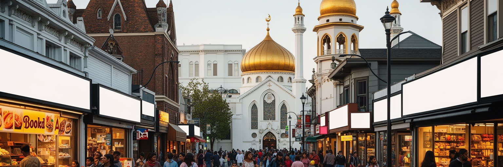
バンクーバーの文化は、移民の歴史と現在を抜きに語れません。中国系、南アジア系、フィリピン系、韓国系、イラン系、ベトナム系、欧州系、ラテンアメリカ系、先住民の生活が重なり、チャイナタウン、リッチモンド、サリー、コマーシャルドライブ、大学周辺に多様な食卓と商店が広がります。寺院、教会、モスク、グルドワラ、仏教施設、無宗教の市民活動は、祈りだけでなく言語支援、結婚、葬送、食のルール、移住相談、子どもの教育を支えます。多文化性は観光用の色彩ではなく、住宅契約、学校の通訳、職場の資格認定、医療、差別、世代間の価値観として日常に現れます。古いチャイナタウンは鉄道建設と排除の歴史を持ち、近年は再開発と高齢者支援の課題を抱えます。サリーの南アジア系コミュニティは、宗教施設、商業、政治参加を通じて都市圏の重心を変えています。バンクーバーを移民都市として読むには、歓迎の言葉だけでなく、誰が低賃金の仕事を担い、誰が専門資格を認められず、誰が自分の言語で助けを求められるかを見る必要があります。信仰と食は、見知らぬ都市で生活を組み直すための実用的なインフラでもあります。移民二世や三世は、親の言語、カナダの学校、地域の宗教施設、職場文化の間で自分の居場所を作ります。多文化都市の成熟は、その複数の帰属を自然に扱えるかで決まります。違いを祝うだけでなく、困った時に届く制度が必要です。
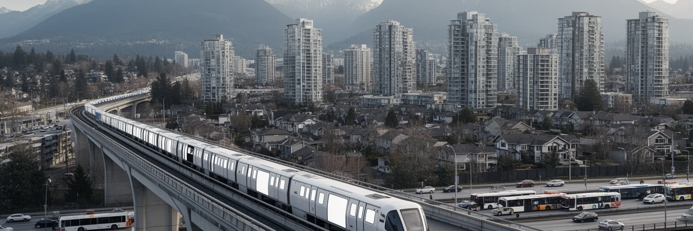
バンクーバー都市圏は、ダウンタウンだけで完結しません。スカイトレイン、バス、シーバス、橋、高速道路、港湾道路が、バーナビー、リッチモンド、サリー、ニューウェストミンスター、ノースバンクーバー、コキットラム、デルタを結び、住む場所と働く場所を広げています。公共交通の整備は車依存を減らし、駅周辺の高密度住宅を増やすが、駅に近いほど家賃と地価も上がります。郊外は単なる寝る場所ではありません。大学、病院、倉庫、寺院、商店街、移民コミュニティ、工業地、農地があり、都市圏の雇用と文化を支えます。サリーやリッチモンドは人口と商業の重心を変え、ダウンタウン中心の都市観を揺さぶっています。橋の渋滞、港湾トラック、空港アクセス、自転車道、歩行者安全は、生活の時間配分を左右します。バンクーバーの交通政策を読むには、列車の速さだけでなく、低所得者が何回乗り換えるか、夜勤者が帰れるか、障害者が駅を使えるか、港の貨物が住宅街をどう通るかを見る必要があります。住宅危機が通勤距離を伸ばすほど、交通は福祉政策にもなります。駅前開発は便利さを増やすだけでなく、誰がその便利さの近くに住めるかを問います。郊外の駅前に住宅を増やすなら、保育、学校、図書館、公園、診療所も同時に必要になります。移動だけを速くしても、生活の拠点が貧しければ都市圏の負担は減りません。課題は続きます。
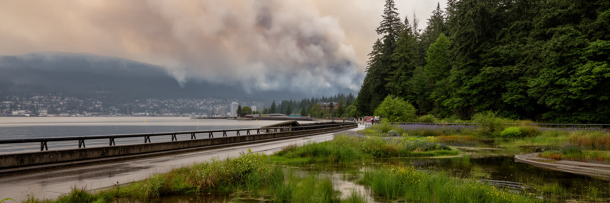
バンクーバーの魅力は、都市から短時間で海、森、山、川へ届くことにあります。スタンレーパーク、シーウォール、ノースショアの山、ビーチ、フレーザー川の湿地は、住民の健康と観光の大きな資源です。しかし自然の近さは、気候リスクの近さでもあります。冬の強い雨、河川洪水、海面上昇、高潮、地滑り、夏の乾燥、山火事煙、熱波は、住宅、港湾、道路、鉄道、医療、屋外労働に影響します。近年の熱波と煙は、涼しい西岸都市という自己像を揺さぶりました。高齢者、低所得者、屋外労働者、冷房のない住宅に住む人ほど、暑さと空気の悪化に弱いです。緑地は涼しさを与えるが、緑の多い地域に住めるかどうかも所得で差が出ます。バンクーバーの気候適応は、海辺の防潮、雨水管理、木陰、冷房避難所、公共交通の強化、先住民の環境知識、湿地保全を一体で考える必要があります。自然は都市の背景ではなく、都市を支えるインフラであり、同時に都市を試す力です。美しい山が見える日に、煙で見えなくなる夏の可能性も考えることが、これからの都市理解になります。気候対策は景観保護だけではなく、停電時に涼める場所、避難できる道、洪水後に戻れる住宅を準備することでもあります。自然と共に暮らす都市ほど、日常の備えが必要になります。水辺の公園や森を守ることは、観光資源を守るだけでなく、熱と雨から住民を守る公共政策でもあります。
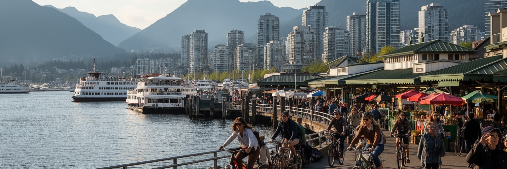
バンクーバー観光は、海辺の歩道、スタンレーパーク、グランビルアイランド、ガスタウン、チャイナタウン、山への日帰り、フェリー、食文化、映画の撮影風景を短い距離でつなげられる点に強いです。旅行者にとっては、自然と都市が同じ一日に収まる分かりやすい魅力があります。ですが観光地としての顔は、住民の生活と常に接しています。短期滞在の需要は住宅市場へ影響し、人気地区の店は観光客向けに変わり、清掃、ホテル、飲食、ガイド、交通、警備の労働が増えます。ガスタウンやチャイナタウンでは、歴史的景観、再開発、薬物危機、高齢者の暮らし、観光消費が近い距離で重なります。グランビルアイランドの市場も、食の楽しさの背後に搬入、家賃、観光客と地元客の比率があります。バンクーバーを訪れるなら、海辺の美しい写真だけでなく、働く人の通勤、地元の買物、公共トイレ、支援施設、雨の日の歩道を見るとよいです。観光の成功は、訪問者の満足だけでなく、住民が中心部を使い続けられるかで測られます。名所が日常を押しのけず、日常が名所の魅力を支える時、都市の観光は成熟します。海と山を楽しむ旅は、街の社会課題を見ない理由にはなりません。観光の収入が地域に残り、歴史地区の高齢者や小商店を支える仕組みがあれば、訪問は都市の維持にもつながります。歩く速度で生活の層を読むことが大切です。
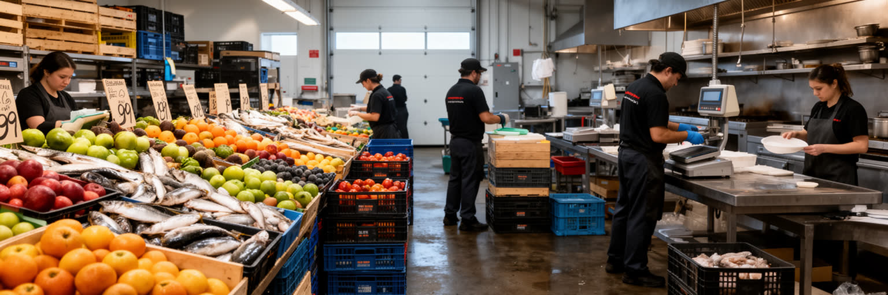
バンクーバーの食文化は、海産物、アジア系の料理、南アジア系の食卓、クラフトビール、コーヒー、農産物市場、移民の小さな店によって厚みを持ちます。寿司、点心、フォー、カレー、フィリピン料理、中東料理、先住民の食の再評価は、太平洋の移動と地域の農水産物が交差した結果です。しかし豊かな食の背後には、漁業、港湾、冷蔵倉庫、配送、皿洗い、調理、接客、清掃、夜間の仕込み、季節労働があります。移民労働者や学生、低賃金のサービス職は、都市の食を支えながら、家賃と交通費に苦しむことが多いです。人気店や市場が増えるほど、働く人が近くに住めない矛盾も深まります。食は文化交流の入口であると同時に、労働条件と土地利用の問題でもあります。バンクーバーの飲食を読むには、メニューの多様さだけでなく、食材が港から入り、郊外の倉庫で保管され、早朝に店へ届き、夜に片づけられる流れを見る必要があります。食べる楽しさは、都市の見えにくい時間帯に働く人の努力で成り立ちます。食文化を誇るなら、作る人、運ぶ人、片づける人が健康に暮らせる都市であるかも問わなければなりません。味の多様性は、労働の公正さと切り離せません。市場や食堂は、移民が仕事を始め、家族の味を守り、近所の信用を作る場所でもあります。食を通じて都市を読むと、文化、物流、家賃、労働が一つの皿に集まります。深いです。
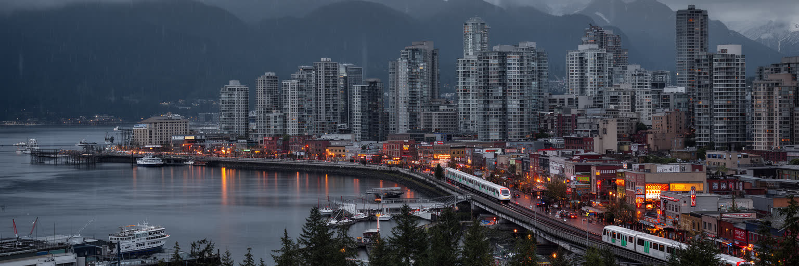
バンクーバーは、美しい都市という一言で語られやすいです。山、海、森、港、高層住宅、清潔な公共空間、多文化の食、映画産業は、訪問者にも住民にも強い魅力を与えます。ですがその魅力の内側には、先住民の土地と主権、住宅危機、薬物とホームレス、港湾の騒音、移民の資格と労働、気候リスク、郊外通勤の負担があります。都市の価値は、絵になる景観を持つことだけでは決まりません。誰が海辺に住めるのか、誰が港を動かすのか、誰が山火事煙の中で働くのか、誰の歴史が地名や学校で語られるのかを見て初めて、バンクーバーの輪郭が見えます。太平洋貿易の玄関であり、先住民の未割譲地であり、移民の生活都市であり、世界の資本が集まる住宅市場でもある点が、この街の複雑さです。バンクーバーを読むとは、自然と都市の調和を称賛するだけでなく、その調和が誰の負担で保たれているかを問うことです。美しさは入口になりますが、社会の矛盾を隠す幕にもなります。港、住宅、森、信仰、食、交通を同じ地図に置くと、都市の強さと脆さが同時に現れます。そこに、西岸都市としてのバンクーバーの重要性があります。もし都市が次の段階へ進むなら、港湾の国際性、先住民との実質的な和解、住宅の安定、気候への備えを別々に扱わないことが必要になります。美しい景観を保つ力は、見えにくい制度の公平さにかかっています。